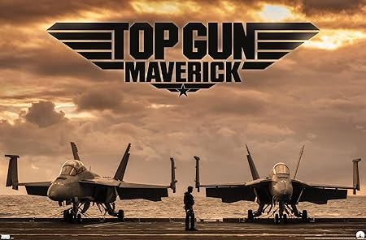
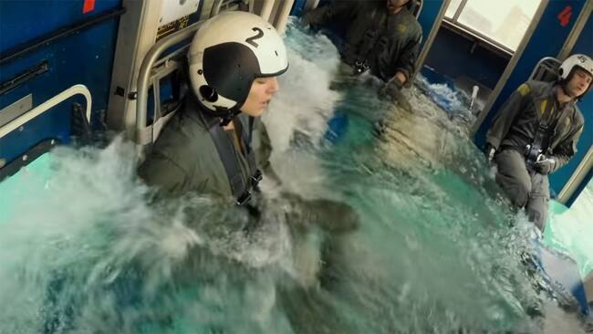
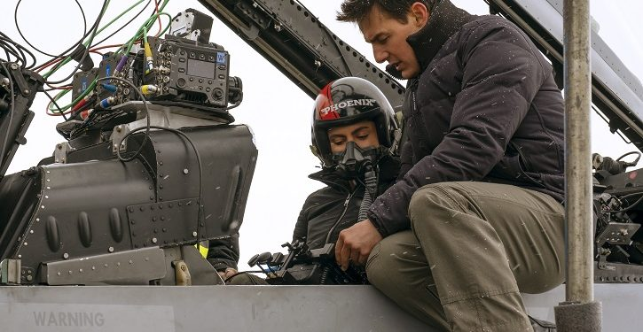
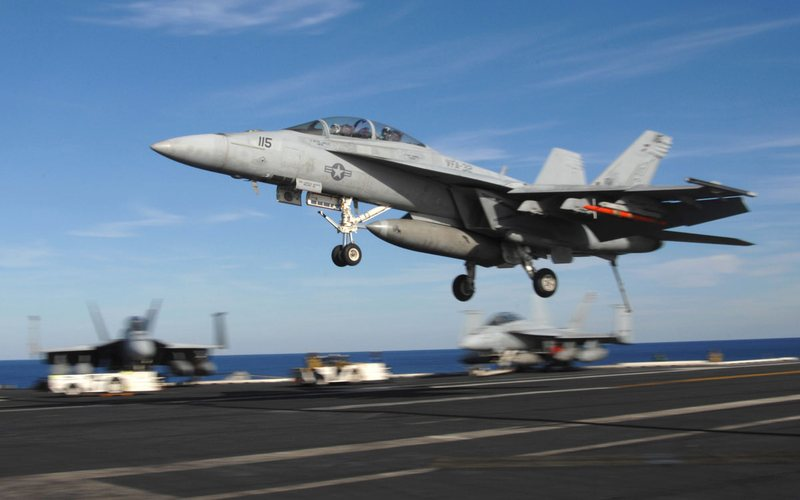
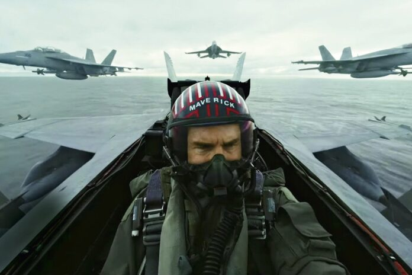

Porque Top Guns Maverick pode ser considerado o melhor filme já produzido!!

As filmagens de Top Gun: Maverick elevaram os padrões do cinema de ação e tornaram o filme uma experiência visual e sensorial incrível. A produção fez questão de usar caças reais, não apenas para garantir autenticidade, mas também para capturar a intensidade de voar em um caça a jato. Tom Cruise e os outros atores passaram por um rigoroso treinamento para suportar as forças G extremas e filmar suas cenas enquanto estavam dentro dos jatos em pleno voo, o que é raríssimo no cinema.
Argumentos irrefutáveis
Treinamento Extremo para o Elenco: Tom Cruise, que já é conhecido por fazer suas próprias cenas de ação, desenvolveu um programa de treinamento intensivo para que o elenco suportasse as forças G e pudesse filmar dentro dos cockpits. Esse treinamento foi essencial para evitar reações naturais, como desmaios, que ocorrem sob alta pressão de gravidade.

Cinematografia Avançada: As filmagens aéreas foram realizadas com câmeras montadas em aviões, permitindo capturar as manobras aéreas de forma emocionante e realista. Isso proporcionou uma experiência visual imersiva e de alta qualidade.As filmagens das sequências de voo foram realizadas enquanto os atores estavam realmente em voo, em vez de depender apenas de efeitos visuais ou simulações. Isso deu ao filme uma sensação de realismo e intensidade que é difícil de replicar. As câmeras foram montadas nos aviões, capturando a ação de forma vívida e dinâmica.

Colaboração com a Marinha dos EUA: A produção teve o apoio da Marinha dos Estados Unidos, permitindo acesso a aeronaves militares de verdade, como os F/A-18 Super Hornet, e à expertise de pilotos profissionais, o que deu uma precisão tática às cenas de combate e manobras. Isso adicionou uma dimensão de autenticidade às cenas de voo, que foram elogiadas até por pilotos reais.

Manobras Realistas e de Alta Velocidade: A equipe de produção filmou cenas com caças voando em altíssimas velocidades e realizando manobras avançadas, com acrobacias arriscadas que poucas pessoas conseguem ver de perto. Esse realismo impressionou o público e os críticos, fazendo o espectador sentir como é estar em um caça durante uma operação militar.

Conclusão
"Top Gun: Maverick" é uma experiência cinematográfica que combina ação de tirar o fôlego, desenvolvimento de personagens profundos e uma narrativa emocionante. Ele respeita e reimagina o legado do original, enquanto apresenta uma história nova e relevante. O filme é um tributo à camaradagem, ao sacrifício e à busca pela excelência, solidificando sua posição como um dos melhores filmes já produzidos. Se você ainda não assistiu, é uma jornada que vale a pena vivenciar!